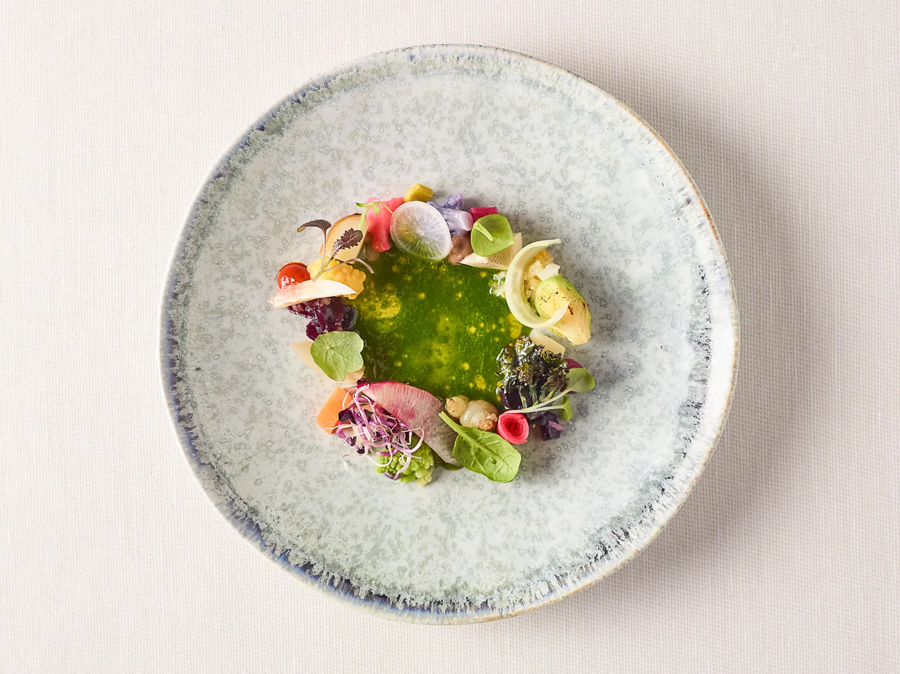

Das Gemüse als Lebensmittelpunkt.
In unserer Küche wird dem Gemüse jener Platz zugewiesen, der ihm gebührt: der Mittelpunkt. Fisch und Fleisch spielen bei uns eine Nebenrolle – wenn auch eine Oscar-verdächtige.
Wir konzentrieren uns auf das handwerkliche Können und auf Top-Erzeugnisse, möglichst aus der Region. Jedes unserer Menüs ist von der Saison geprägt – deshalb verändern sich unsere Gerichte laufend.